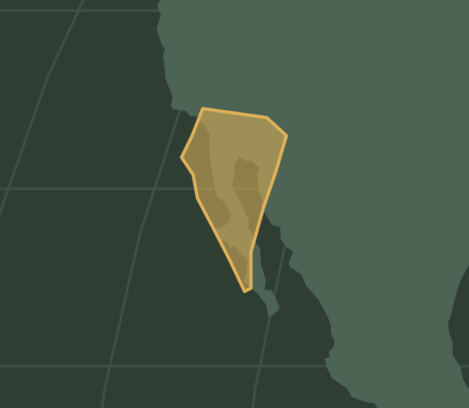

Animal · Bufónidos · Desierto de Sonora
Sapo de Sonora
Incilius alvarius (Girard, 1859)
Un sapo grande del desierto de Sonora que sale de noche, tras las lluvias. Sus glándulas guardan 5-MeO-DMT, una de las triptaminas más breves e intensas que se conocen, y su uso humano es reciente y discutido.345
También se llamasapo del río Colorado · Bufo alvarius · el sapo · sapo del desierto de Sonora

- Qué es
- Anfibio grande, de hábitos nocturnos, del desierto
- Territorio
- Desierto de Sonora, entre el suroeste de EE. UU. y el noroeste de México
- Parte usada
- La secreción de sus glándulas parotoideas
- Principios activos
- 5-MeO-DMT y bufotenina
- Empieza y dura
- Segundos · 15–45 min
- Quién guarda su memoria
- No hay un pueblo que la custodie de forma acreditada
Biología
Un sapo de piel lisa que espera la lluvia
Es uno de los sapos más grandes de Norteamérica: puede superar los 17 centímetros. Tiene la piel lisa, de color oliva o pardo, con grandes glándulas tras los ojos y otras en las patas.12
Pasa buena parte del año oculto en madrigueras y sale de noche, sobre todo en la temporada de lluvias de verano, cuando se reproduce en charcos temporales.12
Las glándulas parotoideas liberan, cuando el animal se siente amenazado, una secreción lechosa que le sirve de defensa frente a sus depredadores.23
- Familia
- Bufonidae
- Tamaño
- Hasta unos 17 cm o más
- Hábitos
- Nocturno, vive en madrigueras
- Reproducción
- En charcas temporales tras las lluvias de verano
Memoria y tradición
Una medicina de historia breve
A diferencia de otras medicinas de esta enciclopedia, no se conoce una tradición indígena documentada que la use. Que pudiera haber sido empleada en el México precolombino es una hipótesis de investigadores, no un hecho acreditado.4
Su conocimiento moderno arranca de la ciencia: en 1992 Davis y Weil describieron al sapo como candidato a ser el primer agente alucinógeno de origen animal, y en 1994 mostraron que su secreción seca se puede fumar y es muy psicoactiva, mientras que es tóxica si se ingiere.34
Desde entonces ha pasado a ser una práctica de ceremonias y grupos contemporáneos. Es una tradición joven, y quien se acerque a ella conviene que lo haga sabiéndolo.
En el tiempo
Girard describe la especie con el nombre de Bufo alvarius.2
Davis y Weil publican «Identity of a new world psychoactive toad».4
Weil y Davis documentan que la secreción es psicoactiva si se fuma y tóxica si se ingiere.3
Una revisión recoge la farmacología clínica de la 5-MeO-DMT y su posible desarrollo terapéutico.5
Sus nombres
- Sapo de Sonora
- por el desierto de Sonora donde vive
- Sapo del río Colorado
- nombre inglés, Colorado River toad
- Bufo alvarius
- nombre científico anterior; hoy Incilius alvarius
- El sapo
- cómo se nombra a la 5-MeO-DMT en muchos círculos
El género cambió de Bufo a Incilius tras una revisión de la clasificación de los bufónidos, y por eso conviven ambos nombres en la bibliografía.12
Territorio y cuidado
Un animal del desierto en un territorio frágil

Vive en el desierto de Sonora y zonas vecinas: el sur de Arizona y el suroeste de Nuevo México en EE. UU., y los estados mexicanos de Sonora, Sinaloa y Chihuahua.12
Es un animal salvaje y su demanda en ceremonias fuera de su tierra preocupa a quienes lo cuidan; la 5-MeO-DMT sintética es la alternativa que no toca al animal.
Qué ayuda
- Preferir la 5-MeO-DMT sintética, que no requiere capturar animales.
- No capturar ni ordeñar sapos: es un animal salvaje de un desierto frágil.
- Preguntar por el origen de cualquier secreción antes de dar por buena su procedencia.
Qué contiene
5-MeO-DMT, una triptamina rápida y muy potente
La secreción contiene 5-MeO-DMT y bufotenina, entre otras sustancias. Davis y Weil identificaron la 5-MeO-DMT como el componente psicoactivo principal.35
La 5-MeO-DMT actúa sobre todo en el receptor de serotonina 5-HT1A, y también en el 5-HT2A.5 La secreción lleva además otras sustancias, algunas tóxicas si se ingiere, y por eso nunca se toma por la boca.3
 5-MeO-DMTTriptamina · principal
5-MeO-DMTTriptamina · principalSe une sobre todo al receptor 5-HT1A, con menor afinidad por el 5-HT2A.[5]
La experiencia
Un cuarto de hora que lo cambia todo
Empieza a notarse en segundos y dura entre quince y cuarenta y cinco minutos, con un regreso gradual después. Por su rapidez, es una de las experiencias psicodélicas más breves e intensas.56
A quienes la viven les cuesta describirla con palabras: muchas personas hablan de una disolución del yo. Por eso, aun siendo corta, no es una experiencia ligera ni conviene vivirla sin acompañamiento.
Esquema orientativo: cambia con la preparación, la cantidad y la persona.
Investigación
Qué se ha estudiado
Una revisión de 2022 recoge que la 5-MeO-DMT se ha estudiado en seres humanos con exploraciones iniciales y que se justifica seguir investigándola con las mismas precauciones que otros psicodélicos clásicos.5
En 2023, un estudio de fase 1/2 con una formulación vaporizada de 5-MeO-DMT sintética, en personas con depresión resistente al tratamiento, comunicó seguridad aceptable y una mejoría de los síntomas.6
Alcance de estos datosSon estudios iniciales, con pocas personas y sin grupo con placebo suficiente para sacar conclusiones. No existe ningún medicamento aprobado con 5-MeO-DMT, y los estudios usan la forma sintética, no la secreción del sapo.
Con cuidado
Lo que conviene saber antes
La secreción es tóxica si se ingiere; solo se ha descrito su uso fumada y seca.3
Las interacciones: algunos medicamentos, en especial los inhibidores de la monoaminooxidasa, cambian mucho sus efectos. La guía de APDER detalla quién no debería tomarla.
Capturar sapos daña un animal salvaje y su hábitat. La 5-MeO-DMT sintética evita ese daño.
No viene de una tradición documentada; conviene saber de dónde viene quien la ofrece y cómo acompaña.4
Para seguir
Libros y medicinas emparentadas
Fuentes
De dónde sale cada dato
- AmphibiaWeb. Incilius alvarius — Sonoran Desert Toad. amphibiaweb.org.
- Wikipedia. «Colorado River toad». en.wikipedia.org (consultada el 24-11-2026).
- Weil AT, Davis W. Bufo alvarius: a potent hallucinogen of animal origin. J Ethnopharmacol. 1994;41(1-2):1-8.
- Davis W, Weil AT. Identity of a New World psychoactive toad. Ancient Mesoamerica. 1992;3(1):51-59.
- Reckweg JT, Uthaug MV, Szabo A, et al. The clinical pharmacology and potential therapeutic applications of 5-methoxy-N,N-dimethyltryptamine (5-MeO-DMT). J Neurochem. 2022;162(1):128-146.
- Reckweg JT, van Leeuwen CJ, Henquet C, et al. A phase 1/2 trial to assess safety and efficacy of a vaporized 5-methoxy-N,N-dimethyltryptamine formulation (GH001) in patients with treatment-resistant depression. Front Psychiatry. 2023;14:1133414.
- Sapo de Sonora (Incilius alvarius). Rstanton13 · CC BY-SA 4.0
- Mapa APDER, con datos de Natural Earth · dominio público
- Dibujos de moléculas APDER
Última revisión: 24 de noviembre de 2026. Si ves un error, escríbenos a info@apder.org.